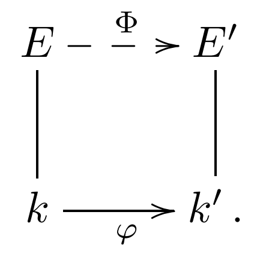

Warning
This is not a overall introduction to the field theory. Please resort to a textbook if you are a beginner in field theory.
Field are those commutative rings s.t. every element except $0$ has an invers element. We start with the simplest fields.
Prime Field
For any field $k$, define its prime field to be the intersection of all subfields
For any field, its prime field must be $\mathbb Q$ or $\mathbb F_p$ for some prime $p$. For field with prime field $\mathbb F_p$, we say it has characteristic $p$, for field with prime field $\mathbb Q$, we say it has characteristic $0$.
Example.
- $\mathbb C,\mathbb R$ has characteristic $0$ because they have prime field $\mathbb Q$.
- $\mathbb F_{p^n}$ for prime $p$ has characteristic $p$.
- $\mathbb Q[i]$, $\mathbb Q[\sqrt2]$ has characteristic $\sqrt 2$.
- The fractional field $\mathbb F_p(x)$ of $\mathbb F_p[ x ]$ has character $p$.
For a field $k$ with finite characteristic $p$, then $p\alpha=0$ for any $\alpha\in k$. Of course, finite field has nonzero characteristic, since if a field $k$ satisfy $|k|=q$ then $q\cdot 1=0$.
Field Extension
For field $k$, if $K$ is a field s.t. $k\subsetneq K$ and there’s an injective homomorphism $\sigma: k\to K$, then we say $K$ is a extension of $k$.
If $K$ is an extension of $k$, we often say “field extension $K/k$”.
Example.
- $\mathbb Q[i]$ is an extension of $\mathbb Q$.
- $\mathbb F_{p^n}$ is an extension of $\mathbb F_p$, as we’ll construct later.
- $\mathbb F_p(x)$ is an extension of $\mathbb F_p$, and the injective homomorphism is $\sigma(\alpha)\to \alpha$ for any $\alpha\in\mathbb F_p$ (which maps elements in $\mathbb F_p$ to constants in $\mathbb F_p(x)$.
For field extension $K/k$, $K$ is a vector space over $k$ (check can be done by checking $K$ meets the definition of vector space). If $K$ is finite dimensional $\dim_k K=n$, then we say extension $K/k$ has degree $n$; otherwise, we say $K/k$ is an infinite extension. The degree of field extension $K/k$ is denoted by $[K:k]$.
Example. $\mathbb C$ is a extension of $\mathbb R$ and $\dim_\mathbb R\mathbb C =2$. The basis of $\mathbb C$ over $\mathbb R$ is $\lbrace 1,i\rbrace$. $\mathbb R/\mathbb Q$ is an infinite extension.
Splitting Field
Let $k$ be a field and $f(x)\in k[ x]$, then $f(x)$ can be split to multiplication of linear polynomials with coefficients in some field $E$, we say $f(x)$ splits in $E$. Let $K$ be the intersection of all such fields, we say $K$ is the splitting field of $f$.
The splitting field of a polynomial always exits, this is Kronecker Theory, which has a simple proof.
The interpretation “the intersection of all such” is not hard to be understood, it is the accurate language for “the smallest such”.
Example.
- For $x^2-2\in\mathbb Q[x ]$, we have $x^2-2=(x-\sqrt2)(x+\sqrt2)$, then the splitting field of $x^2-2$ is $\mathbb Q(\sqrt 2)$.
- For $x^3-2\in\mathbb Q[x ]$, we denote $\omega=2\pi\sqrt{-1}/3$, then the polynomial has three roots $x_1=\sqrt[3]2,x_2=\sqrt[3]2\omega,x_3=\sqrt[3]2\omega^2$. Thus, $x^3-2=(x-x_1)(x-x_2)(x-x_3)$, and its splitting field is $\mathbb Q[\sqrt[3]2, \omega]$. Note that $\mathbb Q[\sqrt[3]2]$ is the smallest field that include $\mathbb Q$ and $\sqrt[3]2$. We have $[\mathbb Q(\sqrt[3]2,\omega):\mathbb Q]=6$ and $[\mathbb Q(\sqrt[3]2):\mathbb Q]=3$. The basis of $\mathbb Q(\sqrt[3]2,\omega)$ is $\lbrace 1,\sqrt[3]2, (\sqrt[3]2)^2, \omega,\sqrt[3]2\omega,(\sqrt[3]2)^2\omega \rbrace$.
They are cases that an irreducible polynomial has repeated roots. Such cases are more complex to deal with. We deal with simpler cases first.
Algebraic Extension
For field externsion $K/k$, if $\alpha\in K$ is a root of some $f(x)\in k[ x]$, then we say $\alpha$ is algebraic over $k$; otherwise, we say $\alpha$ is transcendental over $k$. If every $\alpha\in K$ is algebraic over $k$, we say $K/k$ is an algebraic extension; otherwise, we say $K/k$ is transcendental.
For an algebraic element $\alpha$ over $k$, their must be some irreducible $f(x)\in k[ x]$ having $\alpha$ as a root. By multiple the inverse of $f(x)$’s highest degree coefficient, we can make it to have hightes degree coefficient $1$. We say such $f(x)$ is the minimal polynomial of $\alpha$ in $k$, denoted by $\operatorname{irr}(\alpha,k)=p(x)$.
Separable Polynomial
An irreducible polynomial $p(x)$ is separable if it has no repeated roots. An arbitrary polynomial $f(x)$ is separable if each of its irreducible factors has no repeated roots; otherwise, it is inseparable.
Mathematics has figured out that cases of transcendental extensions can be deal similar to the splitting field of a separable polynomial. Thus, we treat the splitting fields of a separable polynomials and transcendental extensions equally, and call them separable extensions.
Separable Extension
Let $E / k$ be an algebraic extension. An element $\alpha \in E$ is separable if either $\alpha$ is transcendental over $k$ or $\alpha$ is algebraic over $k$ and its minimal polynomial $\operatorname{irr}(\alpha, k)$ is separable; that is, $\operatorname{irr}(\alpha, k)$ has no repeated roots.
An extension field $E / k$ is separable if each of its elements is separable; we say that $E / k$ is inseparable if it is not separable.
Separable extensions are common, as the follows:
- Any extension of a field with characteristic $0$.
- Every finite extension of a finite field.
The above fact says that following extensions are all separable extension: $\mathbb R/\mathbb Q$, $\mathbb C/\mathbb Q$, $\mathbb Q(\pi)/\mathbb Q$, $\mathbb F_{p^m}/\mathbb F_{p^n}$ for $n\mid m$.
Example. Let $k=\mathbb F_p(t)=\operatorname{Frac}(\mathbb F[t])$. Let $\alpha$ be a root of $f(x)=x^p-t\in k[ x]$, then $\alpha^p-t=0$. Let $E=k(\alpha)$, then in $E[ x]$, we have $$ f(x)=x^p-t=x^p-\alpha^p=(x-p)^\alpha $$ Moreover, we have $\alpha\notin k$. If $\alpha\in k$, then there are $g(t),h(t)\in \mathbb F_p[t]$ s.t. $\alpha=g/h$. Hence, $g^p=(ah)^p=th^p$, so that $$ \deg(g^p)=\deg (th^p)=1+\deg (h^p) $$ which contradicts. Thus, $f(x)$ is irrecducible in $k[ x]$ and splits in $E$. However, $f(x)$ has repeated root in $E$, then $E/k$ is inseparable. $\square$
One might think its hard to interprete $t$ as an field element it the last example. A simple example might help is to think of $\mathbb Q(\pi)$. What are elements in $\mathbb Q(\pi)$? Of course $\mathbb Q(\pi)$. To make $\mathbb Q(\pi)$ a field, we have to add the integer powers of $\pi$, their additions and quotients to $\mathbb Q(\pi)$. Thus, $\pi^2, 1/\pi,\frac{3\pi^2+\pi}{4\pi^4+2\pi^3+7\pi^2}\in\mathbb Q(\pi)$. Finally, we reach $\mathbb Q(\pi)$ that contains all fractions of $\pi$ with coefficients in $\mathbb Q$. A keen reader might find out that the parentheses in fractional field of a polynomial field over ring and field extension shares the same meaning.
We now show the existence of finite fields with fixed order $p^n$ of any prime $p$ and positive integer $n$.
One can prove that the multiplication group $k^\times$ of a finite field $k$ is cyclic. (the proof uses some nontrivial fact of cyclic group, with order $p^n$) We call a generator $\alpha$ for $k^\times$ a primitive element in $k$.
Notice that finite field has characteristic $p$ for some prime, then it must contain a subfield $\mathbb F_p$. Thus any finite field is a vector space over some $\mathbb F_p$. Since finite vector space over finite field has finite dimension, say $n$, then it must have elements of number $p^n$.
Before counstruting all finite fields, we introduce an important result. Let $k$ be a field and $f(x)\in k[ x]$ be a irreducible polynomial over $k$. Note than $$ I=(f(x))=\lbrace rf(x):r\in k[ x]\rbrace $$ is an ideal in $k[ x]$. Consider the quotien ring $k[ x]/I$. Notice that for any $+$, we have $f\nmid g$. Then there are $s,g\in k[ x]$ s.t. $sg+tf=1$. Then $(s+I)(g+I)=sg+I=1+I$. Thus we can find the inverse for any $g+I\in k[ x]/I$ and $k[ x]/I$ is a field. Note that $k$ is a subfield of $k[ x]/I$, the embedding if $\sigma(\alpha)=\alpha+I$ for any $\alpha\in k$. It would be more interesting to check that, $x+I$ is a solution of $f(x)$ in $K=k[ x]/I$. (By repeating this, $f$ would finally being splitted in some field $K'\supset K$, and Kronecker Theory proved.)
How to explicitly contruct the field with $p=q^n$ elements? Here we mean to construct a field of order $q^n$ that the elements of it can be represent explicilty with objects we are familiar with. And we wish to do the computation in such construction explicitly. To do that, one have to find of a irreducible polynomial of degree $n$ over $\mathbb F_p$. One could prove that such polynomial always exists, but there isn’t a general algorithm to find such. To find all such polynimal, one can try to factor $x^{p^n}-x\in\mathbb F_p[ x]$.
To prove that every field of order $p^n$ of any prime $p$ and positive integer $n$ are isomorphic, we need next lemma.
Lemma
Let $\varphi: k \rightarrow k^{\prime}$ be an isomorphism of fields, and let $\varphi_{*}: k[ x] \rightarrow$ $k^{\prime}[ x]$ be the ring isomorphism: $$ \varphi_{*}: g(x)=a_{0}+a_{1} x+\cdots+a_{n} x^{n} \mapsto g^{\prime}(x)=\varphi\left(a_{0}\right)+\varphi\left(a_{1}\right) x+\cdots+\varphi\left(a_{n}\right) x^{n} $$ Let $f(x) \in k[ x]$ and $f^{\prime}(x)=\varphi_{*}(f) \in k^{\prime}[ x] .$ If $E$ is a splitting field of $f$ over $k$ and $E^{\prime}$ is a splitting field of $f^{\prime}$ over $k^{\prime}$, then there is an isomorphism $\Phi: E \rightarrow E^{\prime}$ extending $\varphi$ :

Then any splitting of a given polynomial is the same one. That’s why we say “the splitting field” instead of “a splitting field”. Consider a field $E$ with $p=q^n$ elements. Then $E^\times$ has order $q-1$ and $\alpha^{q-1}=1$ for all $\alpha\in E^\times$. Then every element of $E$ is a root of $g(x)=x^q-1\in\mathbb F_p[ x]$. Then $E$ is a splitting field of $g$. Since the splitting fields of $g$ are isomorphic, the fields with order $q=p^n$ are isomorphic.